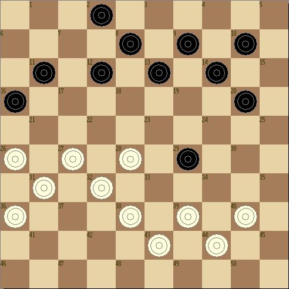
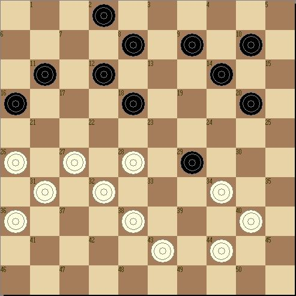
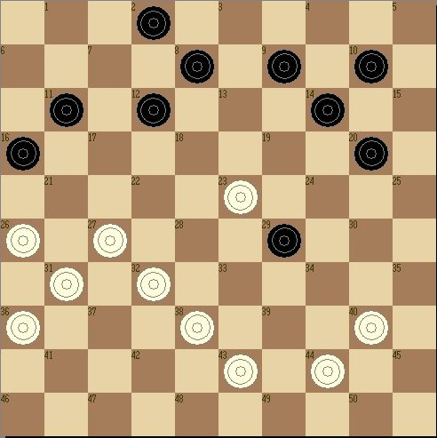
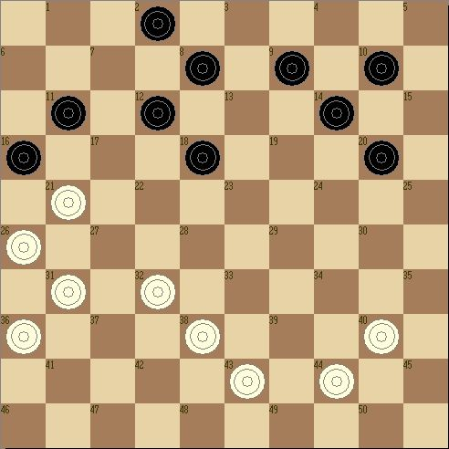
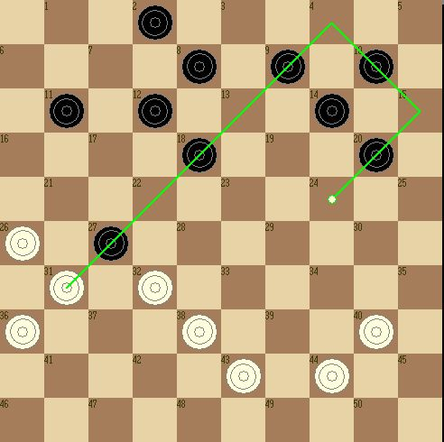

[国际跳棋]我的打击计划
#1 [国际跳棋]我的打击计划 作者：竹子 发表时间：2008-9-20 23:40:11

［ 孤竹 于 2008-10-18 15:38:40 时奖励此帖[金币加 20 威望加1］
#2 Re:[国际跳棋]我的打击计划 作者：竹子 发表时间：2008-9-20 23:42:46
白棋是否可以攻击29格的黑兵？

#3 Re:[国际跳棋]我的打击计划 作者：竹子 发表时间：2008-9-21 8:59:44
白棋有两种攻击29格黑兵的走法，39格白兵到33格或34格，走到33格的时候，黑棋可以把20格的黑兵进到24格，保住29格的黑兵；39格兵走34格会怎么样呢？黑棋可以把13格兵进到18格，形成兑兵的局面，白棋没什么收获。看到这些的时候，我暂时放弃了攻击黑29格兵的打算。#4 Re:Re:[国际跳棋]我的打击计划 作者：竹子 发表时间：2008-9-21 10:31:51
继续观察盘上的局势，27格的白兵运动到21格，可以把16格的黑兵引入27格，是否可以形成一条打击路线呢？这时，我们会发现，在前面的分析中，黑棋是有可能把13格兵走到18格的，这样就形成了一个国际跳棋的打击计划。

计划实施的第一步，39格白兵到33格，开始攻击29格黑兵，黑棋把13格兵进到18格，形成兑兵的局面，兑兵以后，白棋的28格兵进到23格，把黑棋通过兑兵从18格跳到29格的黑兵引回18格，为自己的引入打击计划做好准备。


#5 Re:[国际跳棋]我的打击计划 作者：竹子 发表时间：2008-9-21 11:24:02
这个计划看起来很漂亮，从右翼的准备到中路的送吃，再到左翼的引入，形成了一个很漂亮的打击计划。
局后，我用国跳软件复盘分析了一下，发现黑棋在29格兵被攻击的时候，有一套在左翼巧妙弃子，从中路突破的反击手段。还好实战中对手没有发现我的计划，也没找到这样巧妙的反击手段。
这个棋例，让我们了解到国际跳棋在行棋过程中必须要把左右翼和中间区域结合起来思考，才可以找出最佳的进攻和防御计划。